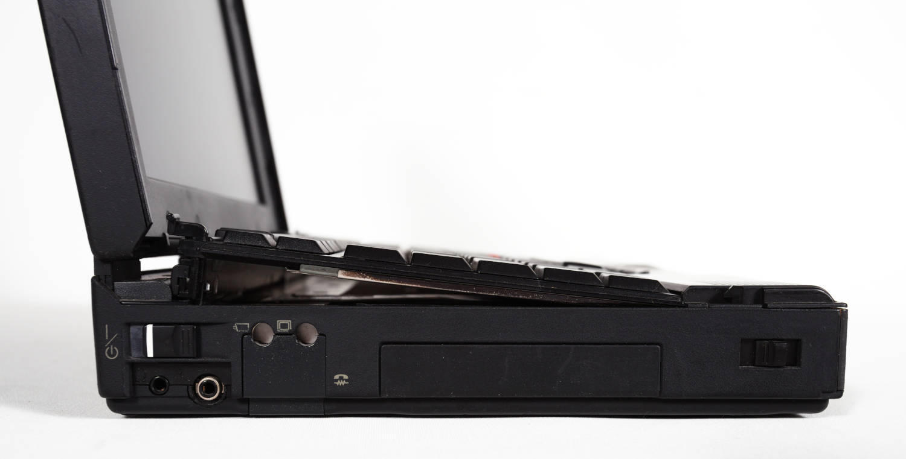
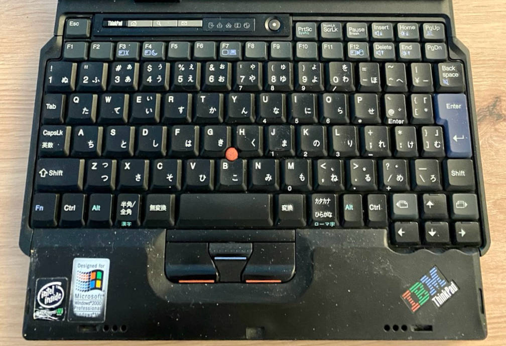

Previous slide Next slide Toggle fullscreen Open presenter view
in Business- und Hacker:innen-Kreisen häufig anzutreffen
prägten seit der Einführung 1992 den Notebook-Markt
Marke hat sich immer verändert, die Wurzeln sind jedoch noch immer erkennbar
stehen nach wie vor für robuste und langlebige Geräte
sah Anfang der 2000er einen Vertreterkoffer mit T23 und Drucker
zeitloses Design und Praktikabilität haben mich begeistertseither ThinkPads als Daily Driver
in einem Corona-Lockdown angefangen ThinkPads zu sammeln
geht auf Tabulating Machine Company zurück
1886 von Herman Hollerith gegründetErfinder des Hollerith-Lochkartenverfahrens
speziell für USA-Volkszählung 1890 entwickelt
1911 als Computing-Tabulating-Recording Company (CTR ) gegründetkombinierte drei Unternehmen
C omputing Scale CorporationT abulating Machine Company (Hollerith)International Time R ecording
CTR beschäftigte 1.300 Mitarbeitende und spezialisierte sich auf Lochkarten, Waagen und Uhren
1924 wurde CTR in International Business Machines umbenanntFokus auf Unternehmen
Lochkartensortierer/-locher und Tabelliermaschinen
Lochkarten-Monopol
leitete CTR und IBM zwischen 1914 und 1955
wurde oft als der weltbeste Verkäufer bezeichnet
sprach von "systematischem Ausschalten der Konkurrenz "
prägte die IBM-Kultur
Starker Fokus auf Vertrieb und Loyalität
Prämien für Verkäufe und Verbesserungsideen
Dresscode, striktes Alkoholverbot (auch privat )
Firmenhymne und Liederbuch
1911 benutzte Watson erstmalig den Slogan
The trouble with every one of us is that we don't think enough. We don't get paid for working with our feet - we get paid for working with our heads.
Bedeutung bewusst vage gehalten, wollte zu proaktivem Handeln motivieren
Interne Zeitschrift wurde in THINK umbenannt, Mitarbeitende erhalten Notizbuch bei Einstieg
zierte später Büros und Mainframes
wurde zur Marke : ThinkPad , ThinkCentre , ThinkVision ,...
IBMs Business-Konferenz heißt ebenfalls Think
Urmodell des IBM PCs
Erster tragbarer Computer
Erster Laptop
Erstes ThinkPad
Trivia: Unterschiedliche TrackPoint-Typen
deutscher Industriedesigner (1932 - 2015†)
wuchs in Guatemala und Deutschland auf, wanderte nach Mailand aus
einer der wichtigsten Produktdesigner der zweiten Hälfe des 20.Jahrhunderts
bekannt für zahlreiche innovative Designs, u.a.
Artemide Tizio-Tischlampe
Lorenz Static-Tischuhr
Alessi-Küchengeräte
...
Artemide Tizio und Lorenz Static
ab 1979 leitender Designberater bei IBM
prägte und vereinheitlichte IBM-Designs:
Personality Study definierte Leergehäuse, in die u.a. Computer gebaut werden konntenschwarze Farbe bei ThinkPadsroter TrackPoint
IBM PC Convertible Model 5140 (1986)
in Boca Raton (Florida) produziert
dort gibt es eine Alligator-Plage
Design greift das auf
Tastatur = Zähne
Öffnungsknopf = Auge
Drucker = Schwanz
erfordert seitliche Betrachtung...
IBM PC Convertible Model 5140 (1986)
Trivia: Beige und schwarze ThinkPads
frühere IBM-Geräte hatten eine beige Farbe
z.B. IBM PC, Convertible, PS/2 Model L40 SX,...
einfach und kostengünstig zu produzieren
Sapper hasste Design und Farbe
"hässliche, dumme, langweilige Box"
einige frühe Geräte gab es sowohl in beige als auch schwarz
beige für den Einzelhandel , schwarz für Geschäftskund:innen
Gerüchte über eine deutsche Arbeitsplatznorm in den 70ern
schrieb Kontast und Lichtwerte für Bürocomputer vor
wurde von anderen EU-Ländern übernommen
Trivia: Beige und schwarze ThinkPads
IBM Deutschland sprach sich daher gegen schwarz aus
man dachte über kieselgraue Geräte nach, verwarf die Idee aber
Regelung lockerte sich später, sofern Handbuch-Hinweis existiert
"Dieses Produkt ist nicht für den Bürogebrauch bestimmt"
Sapper wollte schwarze Gehäuse
Unterschied zur Konkurrenz, mystisches Erscheinungsbild
besserer Kontrast der frühen Farbdisplays
beendete Debatte geschickt
ließ IBM-Chairman John Akers zwischen zwei Entwürfen wählen
dieser wählte schwarz, Sapper machte sich in Boca Raton unbeliebt
Trivia: Rote Kontrastfarbe
Sapper nutzt rot gerne als Kontrastfarbe
Interaktionsflächen können einfacher erkannt werdenemotionale Konnotation
stritt sich lange mit IBMs Corporate Identity-Abteilung
gaben an, rot sei für den Not-Aus der Mainframes reserviert
wollten keine anderweitige Nutzung
Sappers designte daraufhin ein magenta-farbenes TrackPoint
passte die Farbe iterativ an, ohne den Farbcode (TP333 ) zu ändern
IBM bemerkte die Änderungen nicht vor der Produktion
Farbe kam gut an, wurde mit edlen Sportwagen verglichen
Ready for the next layer?
Modellserien von 1991 bis 1999
Serie
Beschreibung
200
Besonders kompakte Subnotebooks, bis 10.4"
300
Einstiegsmodelle, exakt DIN A4 groß
500
Ultraportable Geräte ohne Floppy/CD
600 / 700
Oberklasse, hochwertig und stabil
800
Modelle mit IBM PowerPC-CPU
1000
i Series , von Acer produzierte Prosumer-Geräte
dreistellige Nummer, an BMW-Modelle angelehnt
Produktionsreihenfolge geht nicht aus Nummerierung heraus
345 erschien z.B. nach 350
Modellserien von 1991 bis 1999
ThinkPad 240
ThinkPad 550BJ mit Drucker
Modularer Aufbau

Tastatur wird beim Öffnen angehoben
Modellserien von 1991 bis 1999
TrackWrite-Keyboard des 701C
ThinkPad 820 (1995)
Trivia: ThinkPad als Mainframe-Konsole
Mainframes haben mehrere HMCs
dienen u.a. zum Starten und Steuern
werden i.d.R. selten benutzt
Debugging, Troubleshooting
lange dienten ThinkPads als HMC
beliebte Sammler-Objekte
optischer Bestzustand
i.d.R. fehlen WLAN und Modem
HMC = H ardware M anagement C onsole
Trivia: ThinkPad als Mainframe-Konsole
ThinkPad 380E (1998)
IBM OS/2 mit Management-Anwendung
Modellserien von 1999 bis 2008
Serie
Beschreibung
T
Bekannteste Serie, ging aus 600/700 hervor
A
Schwere Desktop-Replacements, ging aus 300 hervor
R
günstiger als T-Serie, Kunststoff statt Gummierung
G
Günstige Desktop-Replacements, von Acer gefertigt
Z
kurz produzierte Multimedia-Serie, Widescreen-Tests
X
Ultraportables und Convertibles, ging aus 200/500 hervor
S
besonders kleine Ultaportables mit 10.4", Asia-only
Modellserien von 1999 bis 2008
X40 in UltraBay (2004)
Z61m mit Titanium-Cover (2006)
Modellserien von 1999 bis 2008
CD-Player im i-Series 1500

Japanische Tastatur eines S30
Modellserien von 1999 bis 2008
Schräge Gehäuseform des G40
wechselbarer Laufwerksschacht
kann i.d.R. im laufenden Betrieb gewechselt werden
für eine Vielzahl an Modulen
Disketten und LS-/ZIP-Laufwerke
optische Laufwerke
zusätzlicher Akku
weitere Festplatte
RS232-/LPT-Adapter
R50 mit UltraBay-Laufwerk
Numpad (22P7330)
Serial and Parallel Port Adapter (40Y8121)
proprietärer USB 1.1-Anschluss an der Bildschirmoberseite
rüstete optionale Module nach
Bluetooth und Infrarot Adapter
Webcam, Mikrofon
CompactFlash-Kartenleser
kurzzeitig zwischen 2000 und 2003 verbaut
UltraPort an einem X21
T23 mit Webcam
Mikrofon auf Ständer
CF-Kartenleser
Fernab von Notebooks: IBM WorkPad
zwischen 1997 und 2001 angeboten
9 umgelabelte Palm PDAs
technisch unverändert, lediglich andere Gehäusefarbe und Logo
UltraBay -Docking Stationwegen zu geringem Interesse eingestellt
Shout-Out: In
IBM WorkPad (1997)
Fernab von Notebooks: IBM WorkPad
IBM WorkPad und WorkPad 20X
Ultrabay Plus WorkPad c500 Cradle (27P5738)
Modellserien von 2008 - 2016
Modellbezeichnung nach dem Buchstaben nun dreistellig
beinhaltet nun auch die Bildschirmgröße (erste Ziffer nach dem Buchstaben ):
T400 = 14.1"-Zoll
T500 = 15.4"-Zoll
die nächsten beiden Ziffern stehen nun für die Generation :
erste Generation die komplett von Lenovo gestaltet wurde
Displayhaken werden wegrationalisiertneues Precision Keyboard
Klassische 7-Row (T400) und Precision Keyboard (T470p)
Modellserien von 2008 - 2016
Änderungen gegenüber früheren Serien:
Serie
Beschreibung
L
Ersetzt die R-Serie, Consumer-BIOS
E
Neue günstigste Serie, qualitativ unterhalb L-Serie
X
12.1", 12.5" und 13.3", auch Convertible Tablets
X1
14"-UltraBooks und Converible Tablets (Yoga )
W
Zertifizierte Workstations, ersetzt Axxp- und Txxp-Modelle
Modellserien von 2008 - 2016
X300 als "MacBook Air"-Killer
W701ds mit 2 Bildschirmen
Serie
Beschreibung
T
14-16", optional nun auch AMD sowie ARM (T14s G6)
X
Wird zugunsten der X1-Serie eingestellt
X1
UltraBooks und testweise ein Ultraportable (X1 Nano)
X13
13"-Geräte - X13s ist das erste ARM-Gerät
P
Workstations mit neuen Gehäusen, ersetzt W-Serie
Z
modernes Design, dünne Displayränder, AMD-only
einfacheres Schema ab 2020
Ziffern stehen für Displaygröße (z.B. T14 -> 14" )
anschließend folgt die Generation als eigenes Wort (z.B. Gen 2 )
Z13 G2 (2024)
X1 Nano (2021)
Für einige der Jubiläen wurden besondere Modelle veröffentlicht:
Reserve Edition (2007)
X1C G10 30th (2022)
ThinkPad T25 Anniversary Edition
2017 zum 25.Jubiläum veröffentlicht
basiert auf dem T470
klassische 7-Row Tastatur
Glas-Touchpad
Logo in klassischen IBM-Farben
auf ca. 1.000 limitert, 300 für Deutschland
ThinkPad T25 Anniversary Edition
im Business-Umfeld wegen Qualität beliebt
Reparierbarkeit hat durch dünnere Geräte etwas abgenommen
viele Komponenten können vom User gewartet werden (CRU )
Tastatur, SSD, RAM,...
neuer LPCAMM2 -RAM ermöglicht dünne Module und hohe Geschwindigkeit
Wartungshandbücher frei verfügbar (HMM )
Bei Hacker:innen vor allem wegen gutem Linux-Support beliebt
CRU = C ustomer R eplaceable U nit; HMM = H ardware M aintenance M anual
Framework -Notebooks sind inzwischen auch verbreitet
Kritik an zwischenzeitlich verlötetem RAM
Sperren für manche Komponenten (z.B. WLAN )
Tastaturen leider kein Alleinstellungsmerkmal mehr wie früher
Sticker-Trend bei Notebook-Deckeln
Memetische Relevanz
ThinkPad-Mods aus der Maker-Szene
Es gibt zahlreiche Community-Mods, die die Geräte erweitern:
Frankenpads
stark angepasste ThinkPads, mit neueren Komponenten, etc.
51nb-Mods mit komplett überarbeiteten Mainboards
ThinkPad T61 in Knives Out (2019)
ThinkPad 750 (1993) oder 360 (1994) in Black Widow (2021)
raise BufferOverflowException('Stahp')
- Tabelliermaschinen können im Heinz Nixdorf Museum in Paderborn begutachtet werden
- 113 Jahre bewegte Firmengeschichte
- von Lochkarten und Stechuhren über Röhrenrechner, Mainframes bishin zu Personal Computer und Quantencomputer
- Stimmzettel-Zählungen eingestellt, weil die Hersteller für nicht gezählte Stimmen haftbar gemacht wurden
- ob es damals schon Obstkörbe in den Büros gab?
- Model 5150
- Intel 8088 mit 4,77 MHz
- bis zu 256 kB RAM
- 2x Floppy
- Model 5155
- Intel 8088 mit 4,77 MHz
- 256 - 640 KB RAM
- 2x Floppy, optionale Festplatte später
- CGA-Grafik, monochrom
- Model 5150
- Intel 8088 mit 4,77 MHz
- bis zu 256 kB RAM
- 2x Floppy
- Model 5155
- Intel 8088 mit 4,77 MHz
- 256 - 640 KB RAM
- 2x Floppy, optionale Festplatte später
- CGA-Grafik, monochrom
- wurden die Jahre über immer optimiert
- wurden kleiner, da die Geräte auch kleiner werden
- billiger Replicas erkennt man daran, dass sie schnell **speckig** werden
- Lorenz Static (1960)
- Artemide Tizio (1972)
- Artemide Tizio 50 + ThinkPad T430
- schwarz + beige: 700, 720, 750
- Umfrage ergab
- Kund:innen kauften ThinkPads zu einem Drittel wegen des Designs
- 550BJ
- Intel 486er
- Monochromes STN-Display
- Bubble Jet-Drucker
- Colabo zwischen IBM Japan und Canon
- 701c
- Tastatur klappt sich beim Öffnen diagonal aus
- sehr ausgeklügelter Mechanismus
- Benchmark war: angenehmes Tippen auf dem knappen Tisch eines Flugzeugs
- erschien leider zu spät, war technisch dann bereits veraltet
- 486 statt Pentium 1
- begehrtes Sammlerobjekt
- 800, 820, 850
- eins der seltensten ThinkPads überhaupt
- 3 PowerPC-ThinkPads von 1995 bis 1997 produziert
- IBMs Antwort auf den Trend von UNIX-Workstations?
- SCSI-Laufwerk
- Support für IBM AIX und Windows NT
- läuft natürlich auch mit Linux und BSD
- Beschränkung auf Serien-Buchstaben und zweistellige Nummer beginnend mit **20**
- auch diese gibt keinen Rückschluss auf den Produktionszeitraum
- X32 erschien z.B. nach dem X40
- Z61m
- Titanium-Cover wiegt zusätzliche **400g**!
- es gab nur drei G-ThinkPads (G40, G41 und G50)
- G40 hat einen **Desktop** (!!!) Pentium 4
- mit Acer co-produziert
- als günstige Office-Maschine konzipiert
- eingestellt, weil es zu wenig Unterschiede zu anderen Serien gab
- in Berufsschule gesichtet: **T61p** mit drei Akkus
- an der Hinterseite angebrachter
- UltraBay
- Unterschnall-Akku
- wie der CF-Leser wohl auf dem Bildschirm montiert aussieht?
- vielleicht inspirierte das ja Apple zur "Dynamic Island"... 🤡
- bei der vorherigen Generation stammten einige Geräte noch aus der Feder von IBM (*z.B. X41*) bzw. wurden von Lenovo und IBM produziert (*z.B. T60*)
- größere Tasten
- mehr Freiräume zwischen den Tasten
- 6 statt 7 Reihen
- keine blauen Kontraste mehr
- Sondertasten werden durch **Tastenkombinationen** ersetzt
- P passt zu den **ThinkStation P Series**-Geräten
- Z13
- verzichtet auf zusätzliche Tasten im TouchPad
- sehr dünne Displayränder
- Kamera steht hervor und dient auch zur Öffnung
- X1 Nano
- wiegt unter 1 kg
- Magnesium + Kohlefaser
- sehr kompakt robust
- Lenovo setzt sich zusammen mit Dell und anderen Herstellern gegen verlöteten RAM ein
- WLAN Kartensperre aufgrund von Export- und Frequenzbeschränkungen
- 51nb-Mods sind super interessant, aber recht teuer (da Kleinstauflage)
- Homeland T430, T530/W530 mit Windows Vista-Stickern auf dem Deckel